about 1000 BCE to 500 CE
Classical Worlds
Empires and academies turned play into sport, strategy and art.
- Southeast Asia and the Islands (17)
- Northern and Eastern Europe (15)
- South Asia (12)
- Persia, Caucasus and Central Asia (11)
- Mediterranean (10)
- Japan and Korea (10)
- China (8)
- Celtic and Atlantic Europe (8)
- Africa: Great Lakes and Indian Ocean (8)
- Africa: Nile and the Horn (7)
- Mesopotamia, Levant and Arabia (6)
- Shared across the world (5)
- Africa: Sahel, West and Central (5)
- The Americas: North America (4)
- The Americas: Andes and South America (4)
- Steppe and Arctic (3)
- The Americas: Caribbean (3)
- The Americas: Mesoamerica (1)
Africa: Nile and the Horn 7

Aragoz Hand-Puppet Booth
Egypt · Performance and storytellingPlay preview · in the Story & Theatre of the World app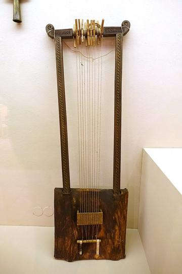


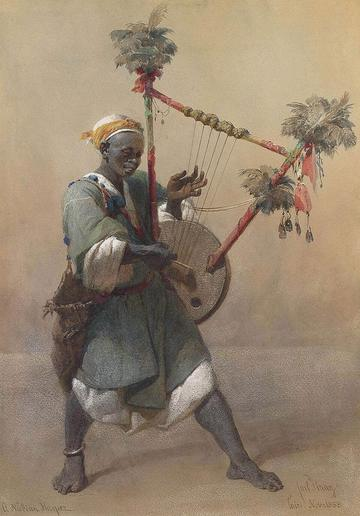
Zande kundi arched harp
South Sudan · Musical instruments
Africa: Sahel, West and Central 5

Fula Riti One-String Fiddle
Guinea · Musical instruments
Imzad Fiddle
Niger +2 · Musical instruments

Mvet
Gabon +2 · Musical instruments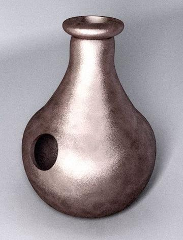
Africa: Great Lakes and Indian Ocean 8


Champ de Mars turf
Mauritius · Sports with animal partners
Kitendawili
Kenya · Puzzles and mind games
Moraingy drum-and-strike duel
Madagascar · Wrestling and martial sportsPlay preview · in the Sports & Skill of the World app
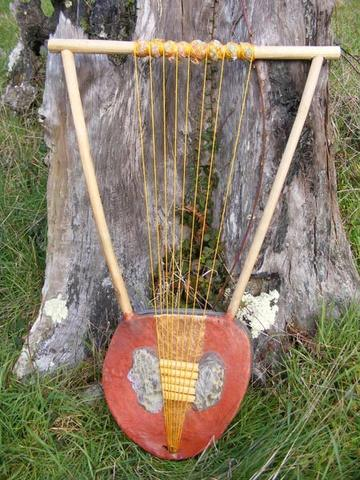

Valiha tube zither
Madagascar · Musical instrumentsPlay preview · in the Zithers & Harps of the World app
Mesopotamia, Levant and Arabia 6
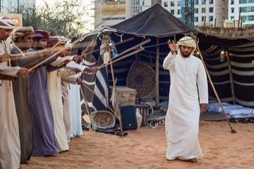
Al Ayyala Cane-Line Rhythm
United Arab Emirates · Archery, throwing and target games

Falaj Water-Turn Clock
Oman · Board and table games


Persia, Caucasus and Central Asia 11


Kyz Kuu
Kazakhstan · Street and playground games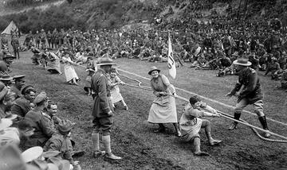
Rope pulling
Kazakhstan · Street and playground gamesKokpar
Kazakhstan · Street and playground gamesShashki / chess
Uzbekistan · Board and table gamesTurkmen Akhal-Teke equestrian games
Turkmenistan · Street and playground games
South Asia 12

Bansuri bamboo flute
India +1 · Musical instrumentsPlay preview · in the Music & Dance of the World app
Digor
Bhutan · Archery, throwing and target games
Kathputli string puppets
India · Performance and storytellingPlay preview · in the Story & Theatre of the World app
Kotta Pora
Sri Lanka · Wrestling and martial sportsPlay preview · in the Sports & Skill of the World app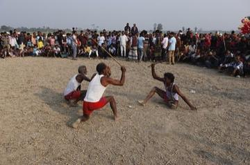
Lathi Khela
Bangladesh · Wrestling and martial sports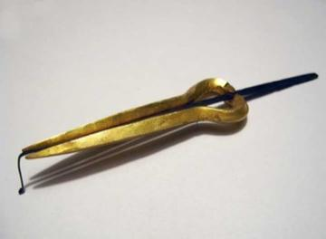

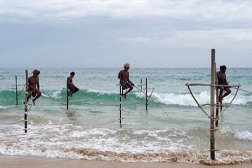
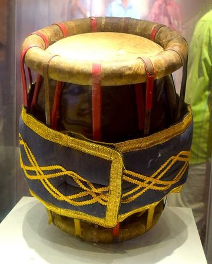
Horn pulling
Sri Lanka · Street and playground games
China 8

Cuju
China · Dexterity and skill games

Dougong Bracket Stacking
China +2 · Puzzles and mind games


Tea Horse Road Caravan
China · Board and table games
Japan and Korea 10

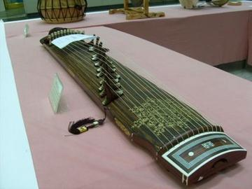
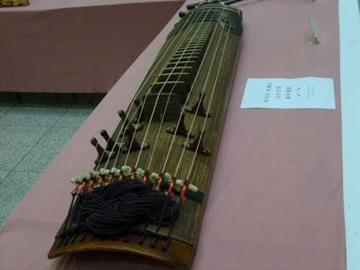
Geomungo
South Korea · Musical instruments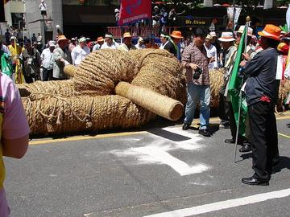
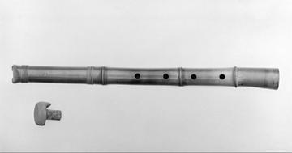
Southeast Asia and the Islands 17

Arnis / Eskrima
Philippines +1 · Wrestling and martial sportsPlay preview · in the Sports & Skill of the World app
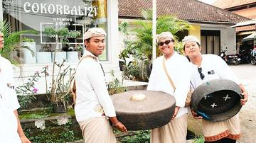

Kampong Ayer water-taxi dash
Brunei +1 · Water and winter sports
Khloy bamboo duct flute
Cambodia · Musical instruments

Pencak silat
Indonesia +3 · Wrestling and martial sportsPlay preview · in the Sports & Skill of the World app


Water puppet pond theatre
Vietnam · Performance and storytellingPlay preview · in the Story & Theatre of the World app
Wau bulan kite
Malaysia · Dexterity and skill games
Wayang Shadow Puppets
Indonesia · Performance and storytellingPlay preview · in the Story & Theatre of the World app
Yoke thé
Myanmar · Performance and storytellingPlay preview · in the Story & Theatre of the World appEncang kuda
Singapore · Street and playground games
Mediterranean 10
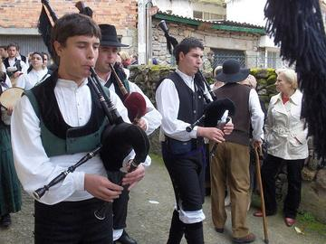


Malha
Portugal · Archery, throwing and target games

Portuguese Guitar
Portugal · Musical instruments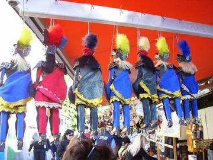
Sicilian Puppet Knights
Italy · Performance and storytelling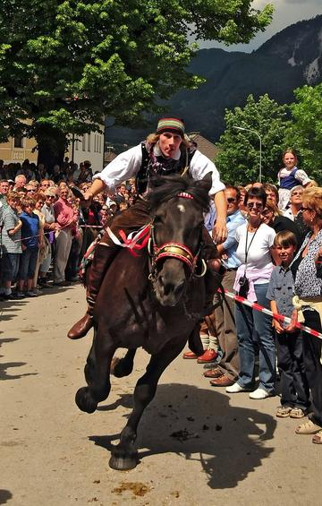
Slovene quintain
Slovenia · Street and playground games
Tbourida
Morocco · Sports with animal partnersBoċċi
Malta · Street and playground gamesPortuguese staff fighting
Portugal · Street and playground games
Northern and Eastern Europe 15
Alpine Yodel
Switzerland +2 · Archery, throwing and target gamesPlay preview · in the Wind & Voice of the World app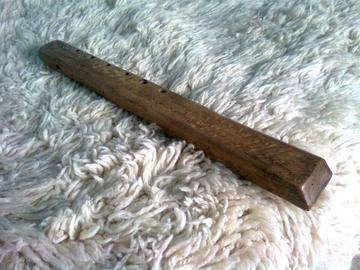

Finger Hooking
Germany +1 · Wrestling and martial sports
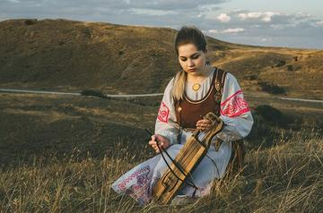


Kurai
Russia · Musical instruments
Langeleik
Norway · Musical instruments
Mounted Archery Course
Hungary · Dexterity and skill gamesPlay preview · in the Sports & Skill of the World app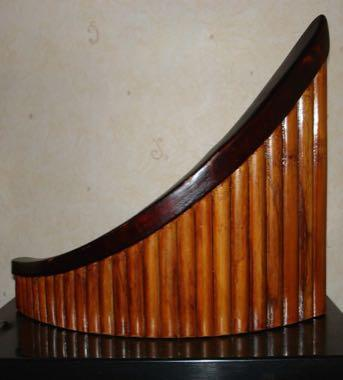


String Marionette Theatre
Czechia · Performance and storytellingPlay preview · in the Story & Theatre of the World app
Celtic and Atlantic Europe 8

Basque stone lifting
France · Acrobatics and strength

Krulbol
Belgium +1 · Dexterity and skill gamesLangspil
Iceland · Musical instruments
Boules lyonnaises
France · Street and playground gamesProvencal boules
Monaco · Street and playground games
The Americas: Mesoamerica 1

Kite flying
Honduras · Dexterity and skill games
The Americas: Andes and South America 4


Joropo llanero band
Venezuela +1 · Musical instrumentsPlay preview · in the String Music of the World app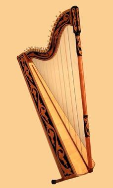
Paraguayan Harp
Paraguay · Musical instruments
Payada
Argentina +1 · Wrestling and martial sports
The Americas: Caribbean 3

Kalinda Stick Duel
Trinidad and Tobago · Wrestling and martial sports
Kites
Barbados +1 · Dexterity and skill games
Tuk Band
Barbados · Other traditions
The Americas: North America 4


Mountain dulcimer
United States · Musical instrumentsPlay preview · in the Zithers & Harps of the World appGlass harmonica
United States · Musical instrumentsPlay preview · in the Odd Instruments of the World app
Steppe and Arctic 3
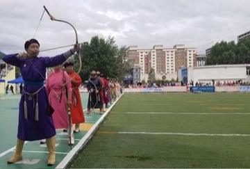
Mongolian Bow Archery
Mongolia · Dexterity and skill games

Tuvan Throat Singing
Mongolia +1 · Archery, throwing and target gamesPlay preview · in the Wind & Voice of the World app
Shared across the world 5

Equestrian vaulting
Worldwide · Sports with animal partners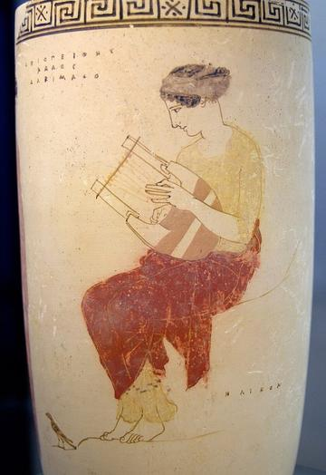
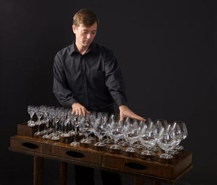
Musical glasses
Worldwide · Musical instrumentsPlay preview · in the Odd Instruments of the World app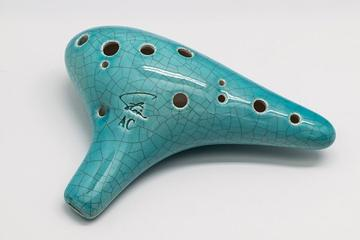

Skijoring
Worldwide · Sports with animal partners